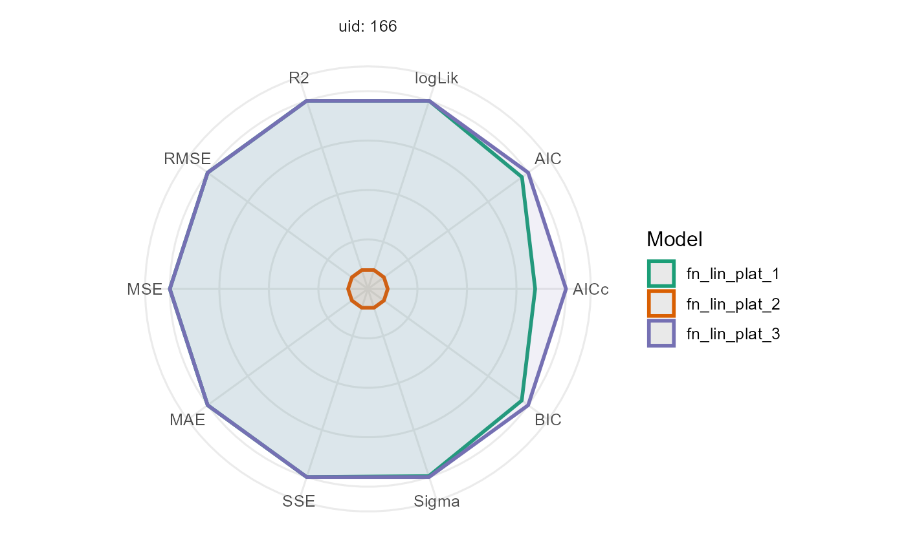

Modeling plant emergence and canopy growth using UAV data
Source:vignettes/canopy-model.Rmd
canopy-model.RmdThis vignette demonstrates how to use a piece-wise regression and canopy data derived from UAV imagery to estimate two key parameters:
- t1: the day of plant emergence
- t2: the number of days it takes to reach the maximum canopy.
The data presented here are part of Professor Jeff Endelman’s breeding program, specifically for a partially replicated experiment. The UAV images were collected in 2020 and processed in 2024
1. Exploring data
We begin by exploring the data using the explorer function. This provides us with some basic statistical summaries and descriptive statistics, as well as visualizations to help understand the temporal evolution of each plot for the given variables and their correlations.
names(explorer)
#> [1] "summ_vars" "summ_metadata" "locals_min_max" "dt_long"
#> [5] "metadata" "x_var"
p1 <- plot(explorer, type = "evolution", return_gg = TRUE, add_avg = TRUE)
p2 <- plot(explorer, type = "x_by_var", return_gg = TRUE)
ggarrange(p1, p2)
| var | x | Min | Mean | Median | Max | SD | CV | n | miss | miss% | neg% |
|---|---|---|---|---|---|---|---|---|---|---|---|
| Canopy | 29 | 0.00 | 0.00 | 0.00 | 0.00 | 0.00 | NaN | 196 | 0 | 0 | 0 |
| Canopy | 36 | 0.00 | 2.95 | 1.84 | 15.09 | 3.22 | 1.09 | 196 | 0 | 0 | 0 |
| Canopy | 42 | 0.76 | 23.38 | 22.91 | 46.23 | 9.31 | 0.40 | 196 | 0 | 0 | 0 |
| Canopy | 56 | 33.41 | 75.78 | 75.15 | 98.88 | 12.43 | 0.16 | 196 | 0 | 0 | 0 |
| Canopy | 76 | 89.06 | 99.72 | 100.00 | 100.00 | 1.04 | 0.01 | 196 | 0 | 0 | 0 |
| Canopy | 92 | 62.51 | 97.04 | 98.44 | 100.04 | 4.36 | 0.04 | 196 | 0 | 0 | 0 |
| Canopy | 100 | 25.62 | 82.32 | 87.28 | 99.69 | 15.20 | 0.18 | 196 | 0 | 0 | 0 |
| Canopy | 108 | 6.41 | 68.29 | 74.22 | 98.94 | 21.42 | 0.31 | 196 | 0 | 0 | 0 |
2. Expectation Function
Once the data have been explored, we define the expectation function. In this case, it is a piece-wise regression function with three parameters: t1, t2, and k. The function can be expressed mathematically as follows:
\[\begin{equation} f(t; t_1, t_2, k) = \begin{cases} 0 & \text{if } t < t_1 \\ \dfrac{k}{t_2 - t_1} \cdot (t - t_1) & \text{if } t_1 \leq t \leq t_2 \\ k & \text{if } t > t_2 \end{cases} \end{equation}\]

3. Fitting Models
To fit the model, we use the modeler function. Here:
- x specifies the days after planting (DAP),
- y is the canopy variable to be modeled,
- grp allows us to perform group analysis, e.g., on multiple plots.
In this example, we have 196 plots but will only fit the model for
plots 195 and 40 as a subset. We define the piecewise function
fn_piwise and set initial values for the parameters.
Additionally, we can include a zero value in the time series if
needed.
mod_1 <- dt_potato_20 |>
modeler(
x = DAP,
y = Canopy,
grp = Plot,
fn = "fn_piwise",
parameters = c(t1 = 45, t2 = 80, k = 0.9),
subset = c(195, 40),
options = list(add_zero = TRUE)
)
mod_1
#>
#> Call:
#> Canopy ~ fn_piwise(DAP, t1, t2, k)
#>
#> Sum of Squares Error:
#> Min. 1st Qu. Median Mean 3rd Qu. Max.
#> 390.5 1004.2 1618.0 1618.0 2231.8 2845.5
#>
#> Optimization Results `head()`:
#> uid t1 t2 k sse
#> 40 34.8 53.7 72.5 2846
#> 195 38.7 60.0 91.7 390
#>
#> Metrics:
#> Groups Timing Convergence Iterations
#> 2 1.3435 secs 100% 547 (id)After fitting, we can inspect the model summary and visualize the fit using the plot function:
kable(mod_1$param)| uid | t1 | t2 | k | sse |
|---|---|---|---|---|
| 40 | 34.79943 | 53.73295 | 72.5438 | 2845.5421 |
| 195 | 38.72534 | 60.04934 | 91.7450 | 390.4596 |
3.1. Extracting model coefficients and uncertainty measures
Once the model is fitted, we can extract key statistical information, such as coefficients, standard errors, confidence intervals, and the variance-covariance matrix for each group (plot). These metrics allow us to draw conclusions about the parameter estimates and assess the uncertainty around them.
The functions coef, confint, and
vcov are used as follows:
- coef: Extracts the estimated coefficients for each group.
- confint: Provides the confidence intervals for the parameter estimates.
- vcov: Returns the variance-covariance matrix, which can be used to understand the relationships between the estimates and their variability.
coef(mod_1)
#> # A tibble: 6 × 6
#> uid coefficient solution std.error `t value` `Pr(>|t|)`
#> <dbl> <chr> <dbl> <dbl> <dbl> <dbl>
#> 1 40 t1 34.8 6.90 5.04 0.00235
#> 2 40 t2 53.7 19.9 2.69 0.0359
#> 3 40 k 72.5 9.74 7.45 0.000302
#> 4 195 t1 38.7 2.35 16.4 0.00000322
#> 5 195 t2 60.0 2.65 22.7 0.000000482
#> 6 195 k 91.7 4.03 22.7 0.000000473
confint(mod_1)
#> # A tibble: 6 × 6
#> uid coefficient solution std.error ci_lower ci_upper
#> <dbl> <chr> <dbl> <dbl> <dbl> <dbl>
#> 1 40 t1 34.8 6.90 17.9 51.7
#> 2 40 t2 53.7 19.9 4.93 103.
#> 3 40 k 72.5 9.74 48.7 96.4
#> 4 195 t1 38.7 2.35 33.0 44.5
#> 5 195 t2 60.0 2.65 53.6 66.5
#> 6 195 k 91.7 4.03 81.9 102.
vcov(mod_1)
#> $`40`
#> t1 t2 k
#> t1 47.6139416 -92.41899 0.1251921
#> t2 -92.4189903 397.78991 24.2062199
#> k 0.1251921 24.20622 94.8500916
#>
#> $`195`
#> t1 t2 k
#> t1 5.5439641011 -2.313614 2.781239e-04
#> t2 -2.3136137295 7.014316 3.781056e+00
#> k 0.0002781239 3.781056 1.626935e+014. Providing different initial values
The initial fit may not always be optimal, so we can adjust the initial parameter values for each plot and even fix certain parameters to improve the model.
initials <- data.frame(
uid = c(195, 40),
t1 = c(70, 60),
t2 = c(40, 80),
k = c(100, 100)
)
kable(initials)| uid | t1 | t2 | k |
|---|---|---|---|
| 195 | 70 | 40 | 100 |
| 40 | 60 | 80 | 100 |
mod_2 <- dt_potato_20 |>
modeler(
x = DAP,
y = Canopy,
grp = Plot,
fn = "fn_piwise",
parameters = initials,
subset = c(195, 40),
options = list(add_zero = TRUE)
)
kable(mod_2$param)| uid | t1 | t2 | k | sse |
|---|---|---|---|---|
| 40 | 34.79943 | 53.73295 | 72.5438 | 2845.542 |
| 195 | 72.48588 | 41.90441 | 91.7450 | 6112.868 |
It’s important to note that providing poor initial guesses for the parameters can lead to inaccurate or unreliable model fits. For example, if we mistakenly assign t1 (the day of plant emergence) a value greater than t2 (the day of maximum canopy), the model fit can fail or produce nonsensical results.
5. Fixing some parameters of the model
In certain cases, we may want to fix specific parameters either
because they are known or because we prefer the model to leave these
parameters unchanged. For example, we can fix the parameter
k, which represents the maximum canopy value. If we assume
that the maximum canopy coverage is 100%, we can incorporate this
assumption into the model by fixing k.
fixed_params <- data.frame(uid = c(195, 40), k = c(100, 100))
kable(fixed_params)| uid | k |
|---|---|
| 195 | 100 |
| 40 | 100 |
mod_3 <- dt_potato_20 |>
modeler(
x = DAP,
y = Canopy,
grp = Plot,
fn = "fn_piwise",
parameters = c(t1 = 45, t2 = 80, k = 0.9),
fixed_params = fixed_params,
subset = c(195, 40),
options = list(add_zero = TRUE)
)
kable(mod_3$param)| uid | t1 | t2 | sse | k |
|---|---|---|---|---|
| 40 | 34.80771 | 60.84828 | 6268.4633 | 100 |
| 195 | 38.72534 | 61.96802 | 663.0397 | 100 |
By fixing k to 100, we are telling the model that the maximum canopy for these plots is fixed at 100%. This allows the model to focus on estimating the other parameters, t1 and t2, potentially improving the accuracy of their estimates by reducing the complexity of the model.
Altering Maximun value
If we define an indicator variable that alters the canopy value after
reaching its observed maximum, we can adjust this using the option
max_as_last = TRUE. This typically provides similar
estimates for t1 and t2, but with a lower error.
mod_4 <- dt_potato_20 |>
modeler(
x = DAP,
y = Canopy,
grp = Plot,
fn = "fn_piwise",
parameters = c(t1 = 45, t2 = 80, k = 0.9),
fixed_params = fixed_params,
subset = c(195, 40),
options = list(add_zero = TRUE, max_as_last = TRUE)
)
kable(mod_4$param)| uid | t1 | t2 | sse | k |
|---|---|---|---|---|
| 40 | 34.80771 | 60.84828 | 0.0014765 | 100 |
| 195 | 38.72534 | 61.96802 | 0.0000000 | 100 |
6. Comparing estimations
rbind.data.frame(
mutate(mod_1$param, model = "1", .before = uid),
mutate(mod_2$param, model = "2", .before = uid),
mutate(mod_3$param, model = "3", .before = uid),
mutate(mod_4$param, model = "4", .before = uid)
) |>
filter(uid %in% 195) |>
kable()| model | uid | t1 | t2 | k | sse |
|---|---|---|---|---|---|
| 1 | 195 | 38.72534 | 60.04934 | 91.745 | 390.4596 |
| 2 | 195 | 72.48588 | 41.90441 | 91.745 | 6112.8678 |
| 3 | 195 | 38.72534 | 61.96802 | 100.000 | 663.0397 |
| 4 | 195 | 38.72534 | 61.96802 | 100.000 | 0.0000 |
After fitting multiple models with different initial values, fixed
parameters, and canopy adjustments, we can compare the resulting
coefficients and sum of square errors (sse) to evaluate the
impact of these changes.
rbind.data.frame(
mutate(AIC(mod_1), model = "1", .before = uid),
mutate(AIC(mod_2), model = "2", .before = uid),
mutate(AIC(mod_3), model = "3", .before = uid),
mutate(AIC(mod_4), model = "4", .before = uid)
) |>
filter(uid %in% 195) |>
kable()| model | uid | logLik | df | nobs | p | AIC |
|---|---|---|---|---|---|---|
| 1 | 195 | -29.73590 | 4 | 9 | 3 | 67.47179 |
| 2 | 195 | -42.11462 | 4 | 9 | 3 | 92.22923 |
| 3 | 195 | -32.11869 | 3 | 9 | 2 | 70.23739 |
| 4 | 195 | 260.79010 | 3 | 9 | 2 | -515.58021 |
7. Modelling all plots using parallel processing
Finally, we can apply this method to all 196 plots, leveraging
parallel processing to speed up the computation. To do this, we specify
parallel = TRUE in the options argument, and set the number
of cores using the function parallel::detectCores(), which
automatically detects the available cores.
explorer <- explorer(dt_potato_20, x = DAP, y = Canopy, id = Plot)
fixed_params <- explorer |>
pluck("dt_long") |>
filter(var %in% "Canopy" & uid %in% c(195, 40)) |>
group_by(uid) |>
summarise(k = max(y), .groups = "drop")
mod <- dt_potato_20 |>
modeler(
x = DAP,
y = Canopy,
grp = Plot,
fn = "fn_piwise",
parameters = c(t1 = 45, t2 = 80, k = 0.9),
fixed_params = fixed_params,
options = list(
add_zero = TRUE,
max_as_last = TRUE,
progress = TRUE,
parallel = TRUE,
workers = parallel::detectCores()
)
)